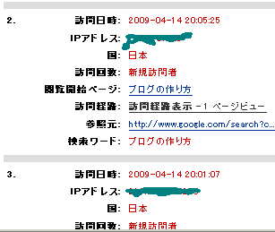
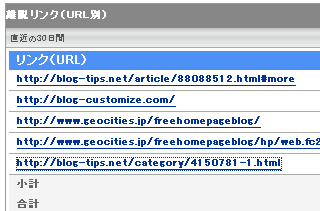

ヤフーアクセス解析とアナリティクス比較
ヤフーアクセス解析を昨日つけてみました。このブログでは以前までは、グーグル無料アクセス解析のアナリティクスを設置していたのですが、ヤフーアクセス解析もけっこうみやすいようで、混在してみた次第です。
解析結果がほぼリアルタイムで分かるようで、数分前のアクセスもすでに解析されちゃったりしているようです。アナリティクスはデータ反映までに結構時間差がある点を考えると、これからはヤフーアクセス解析の方が普及するのではないかなと思います。
ヤフーアクセス解析の特徴
ヤフーアクセス解析は現在のところ、お試しベータ版で、ジオシティーズでジオプラス会員（月額525円）が利用できるようです。
解析結果としては、リアルタイム解析ができるというのが一番の特徴になっているようで、シーサーブログデフォルトやグーグルアナリティクスのように、タイムラグがない点がいい感じです。
今見た感じだと、約6分前のデータも既に解析されちゃっているようなんで、こんな感じでの解析結果が出ているようです。

この訪問者さまは、本日の 20 時 5 分、25 秒に初めて訪問された方のようなんですが、グーグルで「ブログの作り方」と検索して訪問してくれたようです。
パソコンの解像度が1024x768ってなってるんですが、やっぱこの大きさで訪問される方が多いみたいで、レイアウトの横幅を調節した方がいいのかなって気もします。
利用しているブラウザやパソコンのＯＳなどもわかるようです。
ほかにも閲覧開始ページや離脱したページも解析できるようなんですが、この方はトップページからブログ比較的な関連サイトの方へいっちゃったみたいです。
その関連サイトはSEO的な発リンクでちょっと作ってみたんで、なるべくそっちじゃなくってこっちに、、っていう思惑があるんですが、難しいものです。
こんな感じで最新順にリアルタイムにどこから来てどこへいったのかが分かるアクセス解析となっているようなんです。
気になるのは訪問者さまがどこへいったのかという離脱ページなんですが、当ブログの場合はこんな感じの離脱先になっているようです。

このブログの場合、fc2ホームページの作り方のキーワードで訪問されて、関連のホームページの作り方のサイトへ離脱されるのが一番理想的な形なんです。
現在のところホームページ関連の強め被リンクが多めなんで、結構いい感じなんですが、欲をいえば、メールマガジン作り方とか、ＨＰ素材作り方関係のキーワードも欲しいところなんです。
実際に、そのようなキーワードで検索されているのかどうかが、アクセス解析を見るとわかりますし、訪問して欲しいリンク先がクリックされているのかが、離脱ページでわかったりしてヤフーアクセス解析はけっこうお役立ちです。
ヤフーアクセス解析は今のところはジオプラス会員のみですが、独自ドメインが付いているものの、年額に直すと6千円ぐらいになるようです。
それなら普通に独自ドメイン取得してのレンタルサーバーの方が、格安なところだと年額3500円ぐらいでＨＰ作れちゃいますんで、そっちの方がいいかなって気もします。
でも、ページ登録やヤフーでのヒットしやすさを考えると、ぶなんなお値段なのではないかなって気がして、私はジオシティーズを使っています。
ヤフーアクセス解析は現在のところはベータ版ですので、今後正式にリリースされると、無料アクセス解析のシェアはヤフーにながれるのではないかなって気もします。
ＦＣ２や忍者と比較すると、広告が表示されないという点でいい感じですし、無料アクセス解析のグーグルアナリティクスと比較してもリアルタイムでの解析結果なので、これもいい感じだと思います。
利用条件がジオプラス登録だとしても、けっこう登録しちゃう人がいるんじゃないかなって気がします。
アクセス解析の滞在時間などが検索順位のSEOに関連してくるのかどうかはわかりませんが、やっぱ、一瞬で閉じられるサイトよりもページビューや滞在時間が多いサイトをおすすめするもんだと思います。
ヤフーアクセス解析のデータをみればそのようなこともわかるかと思いますが、ヤフー検索順位の結果に影響するようなことはないんじゃないかなって気がします。
でもベータ版だからでしょうか、ヘルプに「Yahoo!アクセス解析を利用しても、Yahoo!検索での検索結果順位や表示に影響はありません。」って感じのが書いてないんで、どうなんだろう？って気もします。
- ブログアクセス解析数の差異
シーサーブログのアクセス解析数は若干多めの傾向となっていますが、これは携帯からのアクセスや機械的なアクセスもカウントしているからだろうと思います。さらに、グーグルアナリティクスやＦＣ２、忍者などジャバ... - 無料ブログアクセス解析のアクセス数の違い
無料ブログで利用しているアクセス解析にはいろいろな種類のものが存在しますが、使用するアクセス解析によってアクセス数にけっこうな違いが生じてしまうように思います。わたしの場合はシーサーブログのデフォルト... - アクセス解析でクリック率調べ
無料ブログを作成したあとアクセス解析をみながら修正していくことは大事なことなのではないかなと思います。 ちなみに、このブログで利用しているアクセス解析はグーグルのアナリティクスです。どこから来たかと...